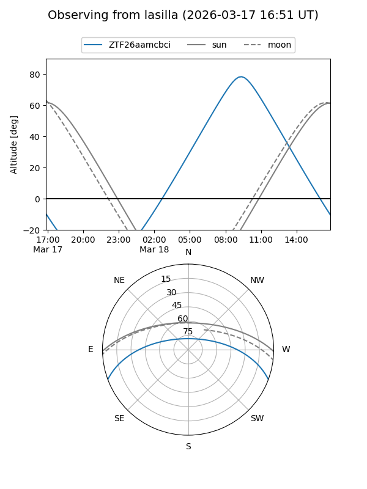
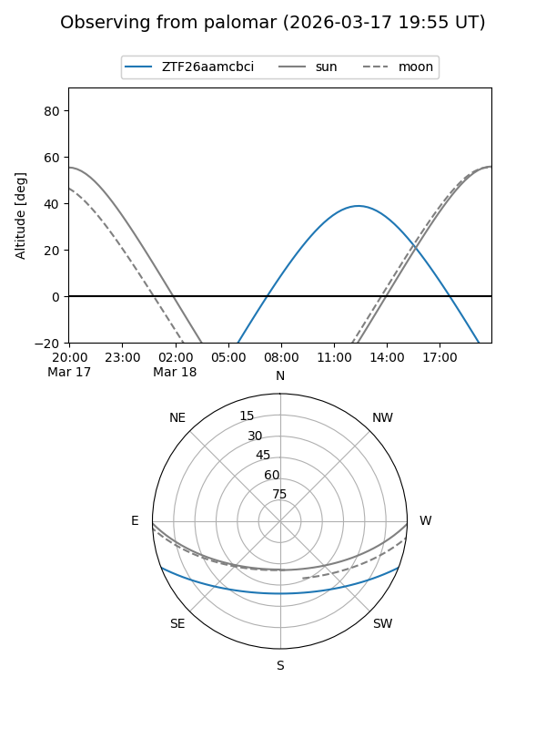

ZTF26aamcbci
Target ZTF26aamcbci at 2026-03-18 14:03
Aliases and brokers:
FINK: link
Lasair: link
ALeRCE: link
alt names
ZTF26aamcbci (ztf,fink_ztf)
Coordinates:
equatorial (ra, dec) = 244.6623,-17.63629
equatorial (HMS+DMS) = 16:18:38.96,-17:38:10.63
galactic (l, b) = (357.2228,+22.72595)
Flags:
Photometry:
last ztfg=14.80
1 ztfg detections
Lightcurve
Visibility


Additional plots